# YOLOv3 ultralytics
# 安装 ultralytics 基础环境
conda install -c conda-forge ultralytics |
# 克隆 YOLOv3 代码
git clone https://github.com/ultralytics/yolov3 |
# 解决 git 443 报错
推荐使用 v2Ray 进行代理，设置 git 的 http 及 https 代理：
git config --global http.proxy socks5://127.0.0.1:10808 | |
git config --global https.proxy socks5://127.0.0.1:10808 |
若使用 v2Ray 的话，其代理端口为 10808，若为 clash 则应为 7891。
# 安装缺少的依赖库
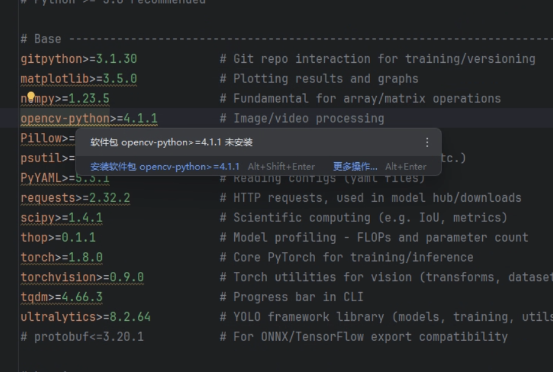当然你可以一个一个安装，但那样有点麻烦，请使用如下命令：
pip install -r .\requirements.txt |
# 权重文件
请访问：https://gitcode.com/open-source-toolkit/b5126/
其中包含了：
- yolov3.pt
YOLOv3 的标准权重文件，适用于大多数目标检测任务。 - yolov3-spp.pt
YOLOv3-SPP 的权重文件，通过空间金字塔池化（Spatial Pyramid Pooling）增强了模型的性能，特别适用于高分辨率图像的目标检测。 - yolov3-tiny.pt
YOLOv3-Tiny 的权重文件，适用于资源受限的环境，如嵌入式设备或移动设备，具有较快的推理速度和较小的模型体积。
# 试运行
首先修改权重文件路径
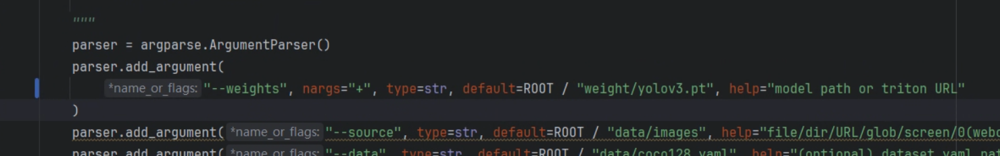运行 detect.py
Fusing layers... | |
yolov3 summary: 261 layers, 61922845 parameters, 0 gradients, 155.9 GFLOPs | |
image 1/2 D:\PycharmProjects\yolov3\data\images\bus.jpg: 640x480 4 persons, 1 bicycle, 1 bus, 70.7ms | |
image 2/2 D:\PycharmProjects\yolov3\data\images\zidane.jpg: 384x640 2 persons, 2 ties, 55.0ms | |
Speed: 1.0ms pre-process, 62.8ms inference, 25.5ms NMS per image at shape (1, 3, 640, 640) | |
Results saved to runs\detect\exp3 |
输出结果：
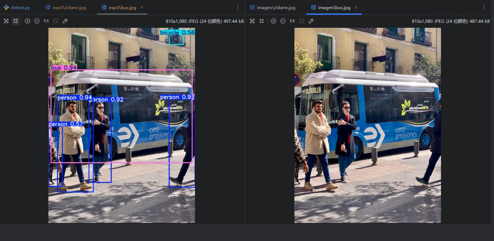效果惊艳，起初我观察输出时 4 persons, 1 bicycle, 1 bus, 70.7ms ，我在想这个 1 bicycle 到底在哪里。
我反复盯着图片看了好几遍：公交车很明显，人也数得清，可自行车呢？画面里没有完整的车轮，没有清晰的车架，甚至也没有骑车的人。那一刻我甚至怀疑，是不是模型误判了。
直到我真正把 YOLO 的标注框图片打开，那辆自行车就在公交车的右上角，位于居民窗户围栏之中，一个几乎被遮挡、只露出局部轮廓的物体，被一个细小却坚定的框牢牢圈住。那一瞬间，我才理解 You Only Look Once 的真正含义…
# 项目结构
# 资源和工具
-
data：存放数据相关的配置文件比如类别名称、路径配置和图片测试数据。 -
models：存放模型相关的配置文件，定义神经网络层级结构和核心代码。 -
runs：结果文件夹。当你运行程序进行推理、训练或测试后，生成的图表、保存的检测结果都会放在这里。 -
utils：工具代码库。存放一些辅助函数，比如计算损失的代码、在图片上画框框的代码等。 -
VOCdevkit：数据集文件夹。通常是按照官方 VOC 标准存放的原始图片和标签文件。 -
weight：权重文件夹。专门用来放训练好的模型参数（权重文件），没有它模型就无法工作。
# 视频与环境文件
-
che.avi：一个测试视频。方便你写好程序后，直接运行来看看能不能识别出视频里的物体。 -
requirements.txt：环境配置文件。记录了运行这个项目需要安装哪些 Python 插件和库，以及对应的版本。
# Python 脚本部分（核心运行程序）
-
Dataset_partitioning.py：数据集划分代码。用来把你的图片随机分成 “训练集” 和 “验证集”。 -
detect.py：检测推理代码。最常用的文件，运行它就可以调用模型去识别一张图片或一段视频。 -
hubconf.py：PyTorch Hub 相关的脚本（用于方便地在其他地方调用这个模型）。 -
train.py：模型训练代码。如果你想用自己的数据教模型认东西，就运行这个文件。 -
val.py：模型测试 / 验证代码。用来跑分，看看训练出来的模型准确率（mAP）到底有多高。
# 超参数文件：hyp.scratch-high.yaml
lr0 表示初始学习率，即训练刚开始时优化器使用的学习率。一般来说，SGD 常用 0.01，Adam 常用 0.001。学习率过大会导致训练震荡甚至发散，过小则收敛缓慢。
lrf 表示最终学习率与初始学习率的比例，通常用于 OneCycle 学习率策略。训练后期的学习率等于 lr0 乘以 lrf，例如 lr0 为 0.01，lrf 为 0.1，则最终学习率为 0.001。这样可以在训练后期减小步长，使模型更稳定地收敛。
momentum 表示动量参数。在使用 SGD 时它是 momentum，在使用 Adam 时对应 beta1。动量的作用是保留历史梯度方向，减少参数更新的抖动，加快收敛速度。
weight_decay 表示权重衰减系数，也就是 L2 正则化强度。它通过惩罚过大的权重来防止模型过拟合，0.0005 是目标检测中非常常见的经验值。
warmup_epochs 表示学习率预热的轮数，前若干个 epoch 内学习率会从较小值逐步增加到设定的初始学习率，主要目的是防止训练初期梯度过大导致不稳定。
warmup_momentum 表示在 warmup 阶段使用的初始动量值，随着 warmup 的结束逐渐过渡到正常的 momentum，有助于平滑训练初期的参数更新。
warmup_bias_lr 表示偏置参数在 warmup 阶段使用的学习率。通常会给 bias 一个相对更大的学习率，使模型能更快地学会目标的大致位置和存在性。
box 表示边界框回归损失的权重，用于控制模型对目标位置和大小回归精度的关注程度。该值越大，模型越重视框的位置准确性。
cls 表示分类损失的权重，用于平衡多类别预测的重要性。如果类别数较多或类别区分困难，通常需要适当增大该值。
cls_pw 表示分类损失中正样本的权重，主要用于缓解正负样本不平衡问题。值为 1 表示不额外加权。
obj 表示目标置信度损失的权重，用于衡量模型判断 “该位置是否存在目标” 的能力，这是 YOLO 检测中非常核心的一项。
obj_pw 表示目标置信度损失中正样本的权重，同样用于样本不平衡场景。
iou_t 表示训练时使用的 IoU 阈值，只有预测框与真实框的 IoU 大于该值时才会参与正样本训练。阈值较低时有利于提高召回率，较高时有利于提高定位精度。
anchor_t 表示 anchor 匹配阈值，用于控制真实框与 anchor 在宽高比例上的匹配宽松程度。数值越大，允许匹配的 anchor 越多。
anchors 表示每个输出层使用的 anchor 数量，该项被注释掉说明使用模型默认的 anchor 设置。
fl_gamma 表示 Focal Loss 的 gamma 参数，当该值为 0 时表示不启用 Focal Loss。Focal Loss 主要用于缓解正负样本极度不平衡的问题。
hsv_h 表示对图像色调的随机扰动幅度，用于增强模型对不同色彩变化的鲁棒性。
hsv_s 表示对图像饱和度的随机扰动幅度，使模型适应颜色深浅变化。
hsv_v 表示对图像亮度的随机扰动幅度，提高模型在不同光照条件下的泛化能力。
degrees 表示随机旋转角度的范围，当前为 0 表示不进行旋转增强。
translate 表示图像随机平移的比例，0.1 表示在上下左右方向最多平移图像尺寸的 10%。
scale 表示图像的随机缩放比例，数值越大，缩放范围越广，有助于增强尺度不变性。
shear 表示错切变换的角度范围，当前为 0 表示不使用错切变换。
perspective 表示透视变换的强度，通常用于模拟不同拍摄角度的效果。
flipud 表示图像上下翻转的概率，0 表示不进行上下翻转。
fliplr 表示图像左右翻转的概率，0.5 表示一半概率进行左右翻转，这是目标检测中非常常用的增强方式。
mosaic 表示 Mosaic 数据增强的使用概率，1.0 表示始终使用。该方法将四张图片拼接成一张，对小目标检测和复杂场景效果显著。
mixup 表示 MixUp 数据增强的概率，通过将两张图片和标签进行线性混合来增强模型的泛化能力。
copy_paste 表示 Copy-Paste 数据增强的概率，即从一张图中裁剪目标并粘贴到另一张图中，用于增加目标组合的多样性。
# no-aug / Object365/ scratch-high/med/low / VOC
# hyp.no-augment
hyp.no-augment 非常特殊，它表示几乎关闭所有数据增强。mosaic、mixup、颜色扰动基本都不开。它主要有三种用途：第一，用来做消融实验，验证 “数据增强到底有没有用”；第二，用在数据本身已经被严格对齐、增强会破坏语义的任务中比如工业缺陷、医学影像；第三，用于调试或快速验证训练流程是否正确。
# hyp.scratch-object365
hyp.scratch-object365 是为 Object365 这种超大规模、类别极多的数据集设计的。它会更加重视分类稳定性，对 cls loss、正负样本平衡和 anchor 匹配都有特殊调优。这套参数一般不建议直接拿来用在普通自制数据集上。
# hyp.scratch
scratch 的意思是 “从零开始训练”，也就是不加载任何预训练权重，网络参数完全随机初始化。在这种情况下，训练对学习率、数据增强和 warmup 都非常敏感，所以官方给了多套经过验证的 hyp 配置。
# hyp.scratch-high
hyp.scratch-high 是为大数据集 + 强数据增强准备的配置。它通常用于 COCO 这种规模在十万级以上的数据集，或者你有非常多样、复杂场景的数据。它的典型特征是数据增强非常激进，比如 mosaic、mixup、颜色扰动都开得比较大，学习率也相对偏高，模型泛化能力最强，但前期训练不稳定，对小数据集非常不友好。
# hyp.scratch-med
hyp.scratch-med 是一个折中方案。数据增强和学习率都比 high 温和一些，适合中等规模数据集，比如几千到一两万张图片。很多人在自定义数据集时，其实用的就是这一套，只是没意识到。
# hyp.scratch-low
hyp.scratch-low 是为小数据集准备的。它会明显减弱数据增强强度，学习率也更保守，避免模型在强增强下 “学歪”。如果你的数据只有几百到一两千张，用 high 或 med 很容易出现 loss 震荡、mAP 不升甚至下降，这时 low 反而效果更好。
# hyp.scratch-voc
hyp.scratch-voc。它是专门为 PASCAL VOC 数据集调的，而不是简单的 low 或 med。VOC 的特点是类别少、目标相对大、场景简单，所以这个配置通常会降低分类损失权重、调整 anchor 匹配策略，更偏向于 “稳而准”。
# 最佳实践？
90% 的自定义数据集，scratch-med 或 scratch-low 起步是最稳的，不要一上来就 high。
# 数据集分类文件及其下载脚本
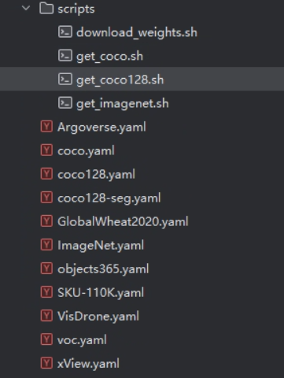每一个 .yaml 文件都像是一份说明书，告诉模型：
- 训练 / 验证数据在哪里：图片和标签存储在硬盘的哪个路径下。
- 有多少个类别：例如模型需要识别 80 种物体还是 10 种。
- 类别的名字是什么：例如
0: person,1: bicycle等。
# 路径设置 | |
path: ../datasets/coco128 # 数据集根目录 | |
train: images/train2017 # 训练集图片路径 | |
val: images/train2017 # 验证集图片路径 | |
# 类别信息 | |
nc: 80 # 类别数量 (number of classes) | |
names: | |
0: person | |
1: bicycle | |
2: car |
# labelimg 标注软件
开源地址：https://github.com/HumanSignal/labelImg
LabelImg is now part of the Label Studio community. The popular image annotation tool created by Tzutalin is no longer actively being developed, but you can check out Label Studio, the open source data labeling tool for images, text, hypertext, audio, video and time-series data.
LabelImg 现已成为 Label Studio 社区的一部分。Tzutalin 开发的流行图像注释工具已不再积极开发，但你可以看看 Label Studio，这是一个开源的数据标注工具，用于图像、文本、超文本、音频、视频和时间序列数据。
Label Studio：https://labelstud.io/ （Open Source Data Labeling Platform）
开源地址：https://github.com/HumanSignal/label-studio/
labelimg 最终版本为：1.8.1 /released this Dec 3, 2018 https://github.com/tzutalin/labelImg/files/2638199/windows_v1.8.1.zip
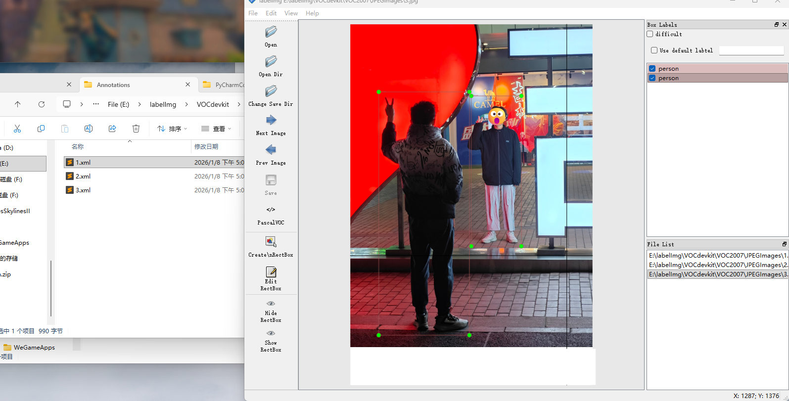推荐使用 VOC 格式的 xml 信息。
# VOC2007
源：http://host.robots.ox.ac.uk/pascal/VOC/voc2007 但是我访问这个时候被防火墙拦截了。
源码中的：
- 训练集与验证集：https://github.com/ultralytics/assets/releases/download/v0.0.0/VOCtrainval_06-Nov-2007.zip
- 测试集：https://github.com/ultralytics/assets/releases/download/v0.0.0/VOCtest_06-Nov-2007.zip
# 将 VOC 格式转为 YOLO 格式
# Data_Trans 脚本
请访问开源脚本：https://github.com/JieZzzoo/Data_Trans
使用说明：https://blog.csdn.net/Thebest_jack/article/details/125637099
感谢作者开源
这个脚本可以将 VOC 格式转为 YOLO 格式，不过他把数据集索引写在了 test、train 和 val 的文本文件里了。
不过他这个提取脚本有点小 bug，后续我将会制作一个完整的脚本。
如果要产生图片（训练、验证、测试）和标签（训练、验证、测试）那样的结构，需要进一步改写，因此我设计了这样的脚本： imgsWlabels
# imgsWlabels 脚本
imgsWlabels 是我自创的一个提取与整理的脚本，如用方式如下，首先你需要把 Data_Trans 中的的 Imagesets、labels 以及 JPEGImages 复制下来放到 imgsWlabels 的 pre 目录下，形如：
imgsWlabels 有两种模式，分别是 “train 与 val” 模式和”trainval“模式。
# train 与 val 模式
在这种模式下，数据集被分为三个部分：训练集、验证集、测试集，这种模式的特点是：训练集和验证集是分开的，避免数据泄露，确保模型的泛化能力。
# trainval 模式
在 trainval 模式下，训练集和验证集被合并为一个整体的数据集，模型在整个 trainval 数据集上进行训练和验证。这种模式通常用于特定的任务，例如数据量不大时，可以通过合并训练集和验证集来提升训练集的多样性和大小。
# 代码
# 划分数据集模式，0 为 train 与 val 模式，1 为 trainval 模式 | |
split_mode = 0 | |
# ---- | |
import os | |
import time | |
import shutil | |
from tqdm import tqdm | |
root_dir = 'pre' | |
root_img_dir = os.path.join(root_dir, 'JPEGImages') | |
root_label_dir = os.path.join(root_dir, 'labels') | |
indexes = os.path.join(root_dir, 'Imagesets') | |
train_index = os.path.join(indexes, 'train.txt') | |
val_index = os.path.join(indexes, 'val.txt') | |
trainval_index = os.path.join(indexes, 'trainval.txt') | |
test_index = os.path.join(indexes, 'test.txt') | |
def read_file_return_list(file_path): | |
try: | |
with open(file_path, 'r') as f: | |
lines = f.readlines() | |
return [line.strip() for line in lines] | |
except FileNotFoundError: | |
print('index file not found') | |
exit() | |
except Exception as e: | |
print(e) | |
exit() | |
train_indexes_list = read_file_return_list(train_index) | |
val_indexes_list = read_file_return_list(val_index) | |
trainval_indexes_list = read_file_return_list(trainval_index) | |
test_indexes_list = read_file_return_list(test_index) | |
def copy_file(src_file, dst_dir): | |
try: | |
os.makedirs(dst_dir, exist_ok=True) | |
shutil.copy(src_file, dst_dir) | |
return True | |
except Exception as e: | |
print(e) | |
return False | |
def cp_file_in_list(src_dir, dst_dir, index_list, target_ext='.jpg', msg='copy file...'): | |
if not os.path.exists(src_dir): | |
print('Source directory does not exist!') | |
return | |
if not os.path.exists(dst_dir): | |
os.makedirs(dst_dir) | |
with tqdm(index_list, desc=msg, unit='file', total=len(index_list), dynamic_ncols=True, | |
ncols=100, mininterval=0.1, | |
bar_format="{l_bar}{bar}| {n_fmt}/{total_fmt} [{elapsed} < {remaining}, {rate_fmt}]") as pbar: | |
for index in pbar: | |
src_file = os.path.join(src_dir, index + target_ext) | |
if copy_file(src_file, dst_dir): | |
pbar.set_postfix(file=index, color='green') | |
else: | |
pbar.set_postfix(file=index, color='red') | |
pbar.update(1) | |
def boot_split(): | |
if split_mode == 0: | |
# train 与 val 模式 | |
cp_file_in_list(root_img_dir, 'images/train', train_indexes_list, msg='copy train file...') | |
cp_file_in_list(root_img_dir, 'images/val', val_indexes_list, msg='copy val file...') | |
cp_file_in_list(root_img_dir, 'images/test', test_indexes_list, msg='copy test file...') | |
cp_file_in_list(root_label_dir, 'labels/train', train_indexes_list, target_ext='.txt', msg='copy train label...') | |
cp_file_in_list(root_label_dir, 'labels/val', val_indexes_list, target_ext='.txt', msg='copy val label...') | |
cp_file_in_list(root_label_dir, 'labels/test', test_indexes_list, target_ext='.txt', msg='copy test label...') | |
elif split_mode == 1: | |
# trainval 模式 | |
cp_file_in_list(root_img_dir, 'images/trainval', trainval_indexes_list, msg='copy trainval file...') | |
cp_file_in_list(root_img_dir, 'images/test', test_indexes_list, msg='copy test file...') | |
cp_file_in_list(root_label_dir, 'labels/trainval', trainval_indexes_list, target_ext='.txt', msg='copy trainval label...') | |
cp_file_in_list(root_label_dir, 'labels/test', test_indexes_list, target_ext='.txt', msg='copy test label...') | |
# ---- | |
if __name__ == '__main__': | |
start_time = time.time() | |
boot_split() | |
print('Time used: %.2f' % (time.time() - start_time)) |
可以根据需要的模式进行修改运行模式。
执行后：
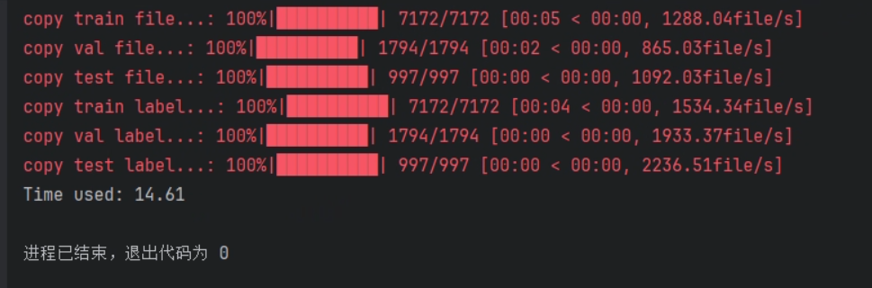会生成：
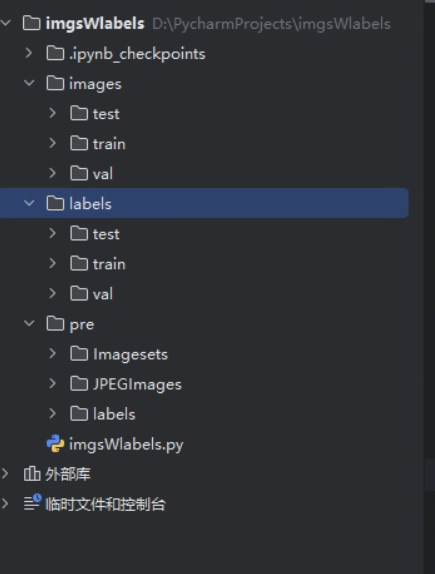# 如何训练模型
一般训练需要修改这几个参数就足够了
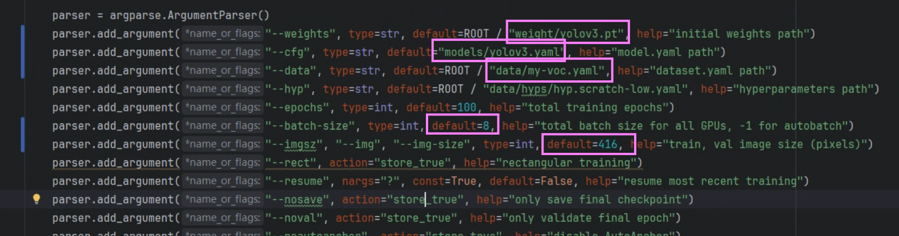设置好数据集路径：
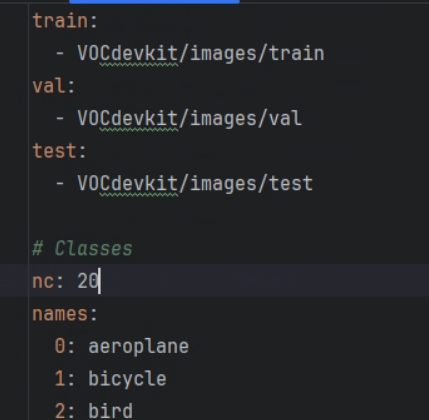修改类别数：
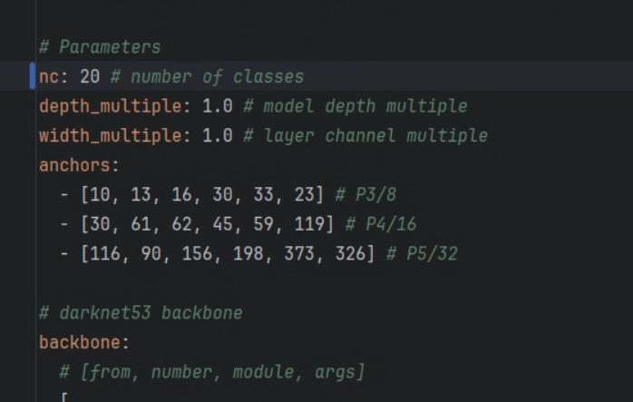最好根据自己的数据集设置检测框那样最好。
开始训练：
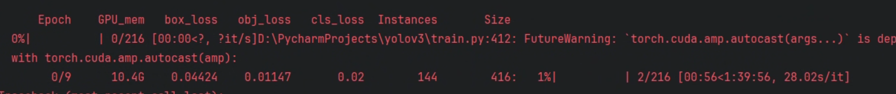 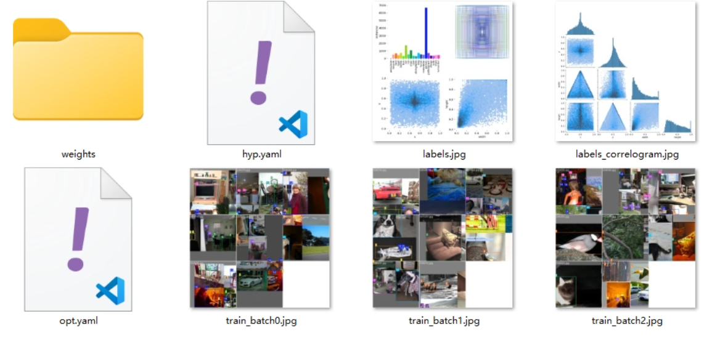# 参数详解
# rect 矩形训练
在训练时，按照图片的原始宽高比进行分组，并尽量减少 padding，而不是把所有图片强行 resize 成正方形。
# resume 断点续训
当训练被中断比如关机、Ctrl+C、显存不足或崩溃后， 从上一次保存的 checkpoint 继续训练，而不是从头开始。
# 如何上采样？
[-1, 1, nn.Upsample, [None, 2, "nearest"]], |
| 参数 | 解释 |
|---|---|
None |
不指定目标尺寸 |
2 |
scale_factor=2 ，宽和高放大 2 倍 |
"nearest" |
使用 最近邻插值 |
# 为什么 yaml 定义结构中的输出通道并不是 255？（对于 Coco）
head: [ | |
[-1, 1, Bottleneck, [1024, False]], | |
[-1, 1, Conv, [512, 1, 1]], | |
[-1, 1, Conv, [1024, 3, 1]], | |
[-1, 1, Conv, [512, 1, 1]], | |
[-1, 1, Conv, [1024, 3, 1]], # 15 (P5/32-large) | |
[-2, 1, Conv, [256, 1, 1]], | |
[-1, 1, nn.Upsample, [None, 2, "nearest"]], | |
[[-1, 8], 1, Concat, [1]], # cat backbone P4 | |
[-1, 1, Bottleneck, [512, False]], | |
[-1, 1, Bottleneck, [512, False]], | |
[-1, 1, Conv, [256, 1, 1]], | |
[-1, 1, Conv, [512, 3, 1]], # 22 (P4/16-medium) | |
[-2, 1, Conv, [128, 1, 1]], | |
[-1, 1, nn.Upsample, [None, 2, "nearest"]], | |
[[-1, 6], 1, Concat, [1]], # cat backbone P3 | |
[-1, 1, Bottleneck, [256, False]], | |
[-1, 2, Bottleneck, [256, False]], # 27 (P3/8-small) | |
[[27, 22, 15], 1, Detect, [nc, anchors]], # Detect(P3, P4, P5) | |
] |
因为 YAML 里定义的是特征提取与融合过程中的中间特征通道数，真正的 255 通道是在 Detect 模块内部，通过 1×1 卷积动态生成的，而不是在 YAML 中显式写出来的。
# 源码种这样写到…
self.nc = nc # number of classes | |
self.no = nc + 5 # number of outputs per anchor | |
self.nl = len(anchors) # number of detection layers | |
self.na = len(anchors[0]) // 2 # number of anchors | |
self.grid = [torch.empty(0) for _ in range(self.nl)] # init grid | |
self.anchor_grid = [torch.empty(0) for _ in range(self.nl)] # init anchor grid | |
self.register_buffer("anchors", torch.tensor(anchors).float().view(self.nl, -1, 2)) # shape(nl,na,2) | |
self.m = nn.ModuleList(nn.Conv2d(x, self.no * self.na, 1) for x in ch) # output conv |
255 = 3 × (80 + 5)
255 与 nc 强相关， nc 改了，输出通道立刻变，YAML 不可能写死 255。